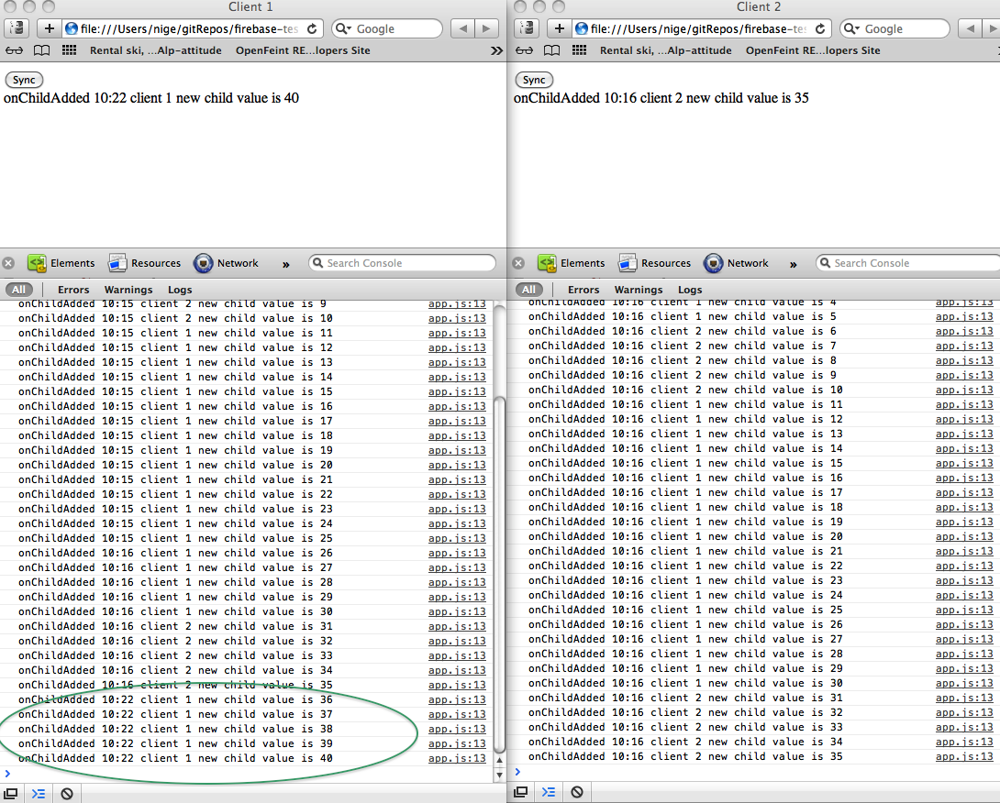

The Dark Side of Firbase Syncing: Test Procedure and Results Included
I’ve been messing around with Firebase now for a few months and I an very impressed with it. Its greatest single feature is that you can code completely in “client side” javascript. You don’t need server side javascript. You don’t need node, meteor or derby. You don’t have to code in strange, alien javascript for the server which comes with a sense of dislocation. Firebase, for the most part, really is quite a painless experience to code in.
I say “for the most part” because there is a dark side. As I’ve said coding in it from a client side perspective is a pleasant experience. However I feel that its most marketed feature – real time syncing – can be an awkward and dislocating experience. Worse still there is a real risk that it can lose data. Syncing is a hard problem to solve and manage. I think Firebase gets us a good bit of the way there but it’s not bullet proof.
Firebase provides a number of syncing patterns for developers to work with. You need to understand how each of these work, their strengths and weaknesses, before choosing the most appropriate sync pattern for your app. In this post, I will talk about the .on() sync event pattern and show you the results of testing it and how it can lose data.
.on() event pattern
The .on() event pattern is probably the sync pattern that is most shown in the firebase docs and tutorials. Here's how the pattern shapes up in html and javascript;
index.html
<head>
<script type='text/javascript' src='https://cdn.firebase.com/v0/firebase.js'></script>
<script type='text/javascript' src="app.js" defer="defer"></script>
</head>
<body>
<button onclick="createItem()"></button>
</body>
app.js
var listAddress = "https://yourtestbox.firebaseio.com/list";
var firebaseListRef = new Firebase(listAddress);
var data = 0;
var onChildAdded = function(snapshot) {
var index = snapshot.name();
data = snapshot.val().value;
console.log("remote length is "+snapshot.val().value);
}
// This gets fired each time a child is added to the firebaseListRef
// from anyone anywhere in the world! Magic!!!
firebaseListRef.on('child_added', onChildAdded);
var createItem = function() {
var newItemForFirebaseListRef = firebaseListRef.push();
var incrementedData = ++data;
// This is how we upload data from here to firebaseListRef
newItemForFirebaseListRef.set({"value":incrementedData}, function(error){
if (error) {
console.log("Data was not save to firebase");
} else {
console.log("This callback guarantees data was really saved to firebase");
}
});
};
If you set up your firebase account you can point this code to your firebase test sandbox and see how it works. It really is magic. Let's try and break down the magic.
How (I think) the .on() sync event works
- When your app initially starts a call is made to the remote firebase servers to retrieve data in json format
- .on() is a method that subscribes and listens for the initial payload of data. Once it arrives .on() fires up and you would typically have your own code in place to transfer the json into a local memory data structure and update the app view.
- The cool thing about .on() is that it is fired by all remote clients of the app who are listening for changes on the firebase servers. As soon one client changes their local data, that change can be broadcast to all other clients of your app and their models and views updated by their instances of .on(). Works great with data binding tools like knockout and angular.
- The dark truth about .on() is that its behavior mutates after the initial payload arrives from the firebase servers. When the user starts using the app and changing the model locally .on() will fire locally first, regardless of whether or not those local changes make it back to the firebase servers.
- A lot of the time the changes make it back to the firebase servers and the changes you just made are then broadcast out to all the other clients in mil;eseconds, picked up by their .on() instances and their local views and models updated accordingly. This is the good parts of .on().
- Sometimes those changes make it to the firebase servers quite slowly. It could take 10 mins in my experience. What seems to happen is that the connection back to firebase is lost and once this happens it can take several minutes to re-establish. I can live with this. Not the end of the world, right? Only if a user does not refresh or navigate away from the page whilst a disconnection is in play.
- But sometimes the changes don't make it back to firebase at all, are lost locally and so are lost forever. If a user refreshes or navigates away whilst a disconnection is in motion then the data the user just changed won’t make it back to firebase. Furthermore once a user refreshes a page the “local firebase” gets wiped. The new locally created data is gone forever. You need to be aware of this risk when using the .on() pattern.
- .on() is the best and easiest pattern to implement to get as close to real time syncing as you can in Firebase. For the most part, as one client creates a new item in a list all other clients will see that new item milliseconds later. It’s nearly there but not quite. Certainly I don't think the .on() pattern could be used to sync important data.
Is there a solution for the .on() problem?
Luckily there is callback mechanism made available to the push() and set() methods in firebase that only gets called when the firebase servers have succeeded (or failed) in making a change that originated from your client.
Unfortunately that’s as far as it goes. The firebase API currently has no convenience methods to help you get at the unsynced data and can’t store it for you locally once you refresh or navigate away. You would need to hack your own solution to store the unsynced local data and push it up to firebase when you refresh.
I now provide a walk through of testing I conducted which gives me good reason (I think) to reach the conclusions I’ve gotten to. You can find the code to run the test at my github account.
Testing .on()
I have put the code in 2 folders called test-base-client-1 and test-base-client-2. The only difference is that var client = 1 in one client and client=2 in the other client so I can log the origin of where a list item is created. The idea is to simulate 2 remote clients on my Mac so I can make some observations around syncing. Here's what happened to me:
- I created 5 new items in client-1. The 5 new items quickly appeared in client-2. It was more or less real time. Great this is what I expected.
- Now I created the next 5 new items in client-2. Client-1 syncs. Excellent.
- I stopped creating new items for about 30 seconds. Then I added 5 new items to client-1 without doing a page refresh. Client-2 was synced. Then I waited another 15 mins and added 5 new time to client-1. Client-2 stopped syncing. Not quite what I expected. How long did it take to catch up?
- Well 4 minutes went by and client-2 just then synced with the 5 new items. (I still hadn’t done a page refresh.)
- I got a “websocket network error” also. This seemed to unblock the client-2 connection problems.
- I then did a page refresh. Both clients received all 20 items as I expected. I was still happy.
- I added another 5 items to client 1, waited 30 seconds and started to add new items. Client-2 stays in sync despite the 30 second delay. I had to repeat this step several times before client-2 stopped syncing. There were now 40 items in the client-1 list and 35 items in the client-2 list. 
- I now refreshed the page of client-1 immediately. I was concerned the onChildAdded event was only operating at a local level on client-1. My instinct was correct. The 5 new items that were just added to client-1 were no longer there because they were never saved to firebase in the first place. If this had been important data it would now be lost forver! Firebase only came back with 35 items in the list not the 40 items that you see above in client-1. Data has disappeared into the ether.